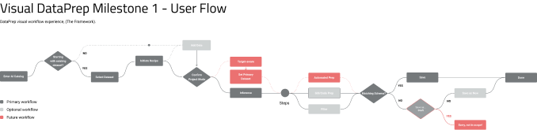
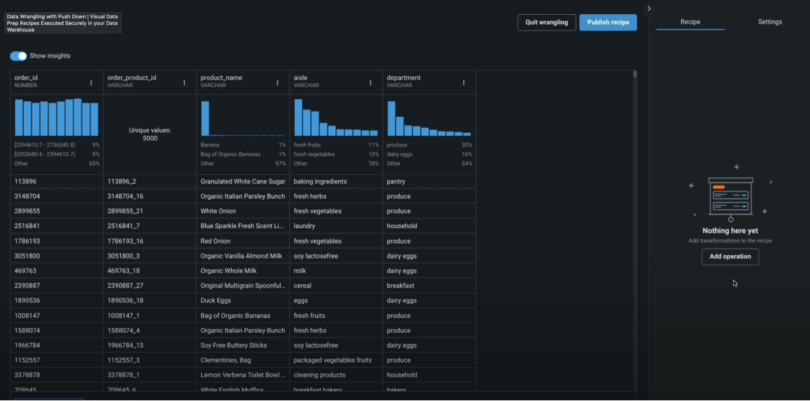
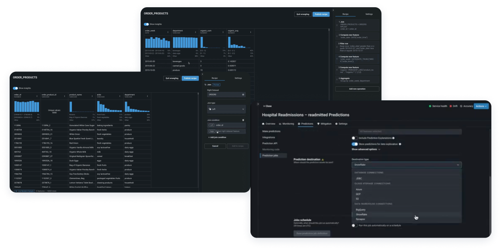

This initiative seamlessly integrated advanced data preparation capabilities into a unified platform. The integration empowered data scientists of all skill levels to efficiently collect, ingest, combine, cleanse, and transform data within a single environment.
Contribution
Principle UX Designer, Interaction Design, Prototyping
Target Users
Data Scientists, Data Engineers
Products
Enterprise Data Management
Timeline
4 months
Integrated Data Prep improved overall productivity and accelerated AI development cycles across teams.
Faster Workflow Completion
No-Code Interface Adoption
Faster Insights
Seamlessly integrating Paxata's data preparation functionalities into DataRobot to create a cohesive and unified experience.
Intuitive interface for data scientists of all skill levels, enabling self-service data preparation without coding.
Advanced capabilities for experienced users, providing powerful SQL-based data transformation tools.
Data preparation is seamlessly integrated into a Unified Workflow Experience, allowing users to complete data prep tasks within a single page application for a cohesive and consistent experience.

Users have access to tools for collecting, cleansing, and transforming data, allowing them to build end-to-end machine learning pipelines without switching between platforms.

Integrated data prep removes bottlenecks, enabling customers to scale ML use cases and deliver results faster.

Testing Alternate Design Patterns: I explored and tested two distinct UI patterns, evaluating users' time on task, task success, and perceived ease of use. The graph editor approach offers an intuitive and powerful visual approach that simplifies the learning curve for new data scientists while boosting efficiency for experienced users.
After user testing and cross-functional stakeholder feedback, we ultimately settled on a more traditional approach that follows other best-in-class products and better supports accessibility standards. This decision was driven by our commitment to creating an inclusive experience that works for all users while maintaining the platform's powerful capabilities.

Integrated Data Prep eliminates complexity for first-time and citizen data scientists, enabling faster adoption of ML workflows and unlocking new use cases.
By integrating data prep directly into DataRobot, it accelerates time-to-value and reduces onboarding friction.
By designing and delivering Integrated Data Prep, I helped streamline machine learning workflows, reduce operational complexity and costs, and enable broader adoption across teams. This work contributed to strengthening the product's position as a robust end-to-end AI solution, supporting key revenue and adoption goals.
Discover other innovative solutions in data management and user experience design.
View All Projects Copilot for Augmented HR
Copilot for Augmented HR Copilot Observability Experience
Copilot Observability Experience